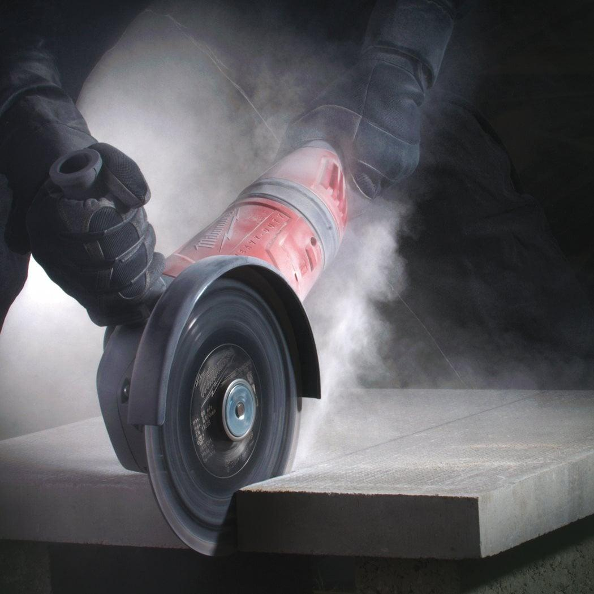
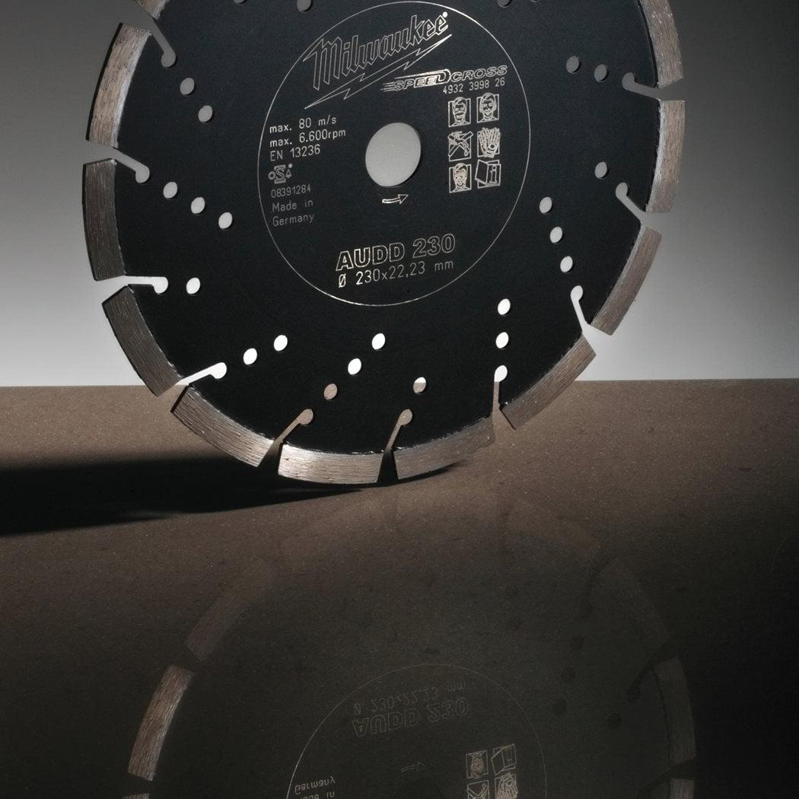
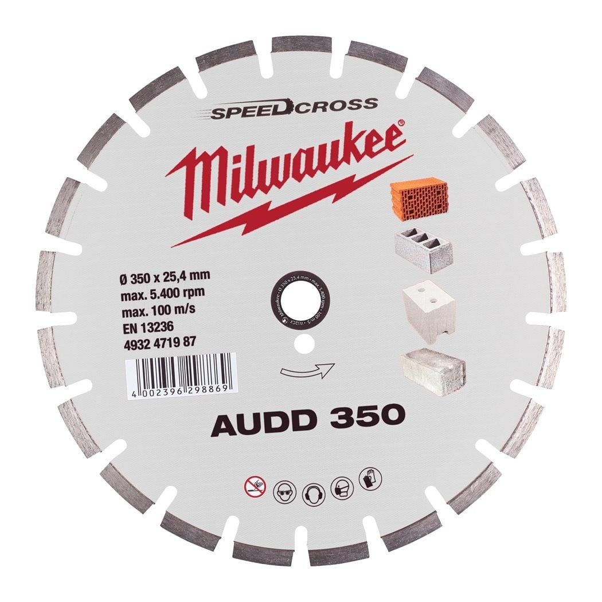

4932471987



| Fits MILWAUKEE® | AUDD 350 |
| Abrasive refractory materials | Most suitable |
| Aerated and breeze concrete blocks | Most suitable |
| Asphalt | Most suitable |
| Bore size (mm) | 25.4 |
| Concrete tiles | Most suitable |
| Cutting width (mm) | 2.6 |
| Diameter (mm) | 350 |
| Disc diameter (mm) | 350 |
| General building materials | Most suitable |
| Lime and sandstone blocks hard | Most suitable |
| Lime and sandstone blocks medium | Most suitable |
| Lime and sandstone blocks soft and abrasive | Most suitable |
| Materials suited for | Asphalt|Concrete|Brick|Limestone |
| Pack quantity | 1 |
| Poroton | Most suitable |
| Roof tiles clay | Suitable |
| Roof tiles concrete | Most suitable |
| Screed | Most suitable |
| Segment height (mm) | 10 |
| Slate | Suitable |
| Stoneware and clay tiles | Most suitable |
| Wheel size (mm) | 350 |